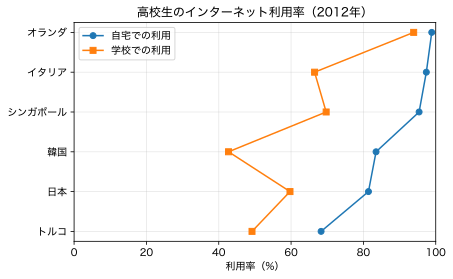
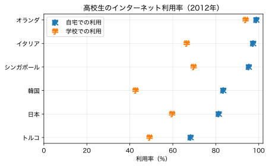
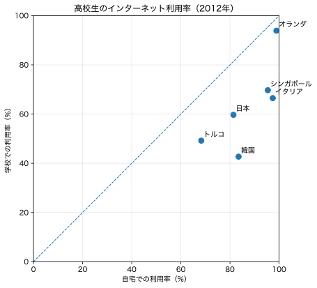

きしださんのツイートで紹介された高校教科書の「高校生のインターネット利用率の国際比較（OECD調査，15〜16歳）」というグラフについて、伊藤先生、荻原さん、ボブさん、ボブさんがコメントされた。これはいつも問題になる「名義尺度を折れ線グラフでつないでいいのか」という問題である。「レーダーチャートの開き」のようなものなので問題ないという意見もある一方で、レーダーチャートについても並び順で面積が変わることをMiwaさん、襖屋さんが指摘された。
（なお、ここではなぜ日本以外にこの5カ国を選んだのかという意図については問わない。）
まずは元の図を、ここでは縦軸と横軸を逆にして、Pythonで描いてみる。
import matplotlib.pyplot as plt
countries = ["オランダ", "イタリア", "シンガポール", "韓国", "日本", "トルコ"]
home = [98.9, 97.4, 95.4, 83.5, 81.4, 68.3]
school = [93.9, 66.5, 69.7, 42.7, 59.7, 49.2]
fig, ax = plt.subplots(figsize=(6.4, 4.0))
ax.plot(home, countries, marker="o", linestyle="-", label="自宅での利用")
ax.plot(school, countries, marker="s", linestyle="-", label="学校での利用")
ax.set_yinverted(True) # または ax.set_ylim(5.5, -0.5)
ax.set_xlim(0, 100)
ax.set_xlabel("利用率（%）")
ax.set_title("高校生のインターネット利用率（2012年）")
ax.grid(True, alpha=0.3)
ax.legend()
plt.tight_layout()
plt.show()

さて、問題はこのような順不同の名義尺度について、線で結ぶのが妥当かどうかである。Clevelandはドットプロット（dot plot）と称して、線を除いた描き方を提案している。線を除くには、上の linestyle="-" を linestyle="none" にすればよい。
点だけではわかりにくいので、文字にしてみよう。それには marker="o" などとなっているところを marker="$H$" のようにすればよい。ただし、文字は数式フォント（イタリック体）になり、日本語文字は化ける。これを防ぐためには、次のようにすればよい：
import matplotlib as mpl
import matplotlib.pyplot as plt
countries = ["オランダ", "イタリア", "シンガポール", "韓国", "日本", "トルコ"]
home = [98.9, 97.4, 95.4, 83.5, 81.4, 68.3]
school = [93.9, 66.5, 69.7, 42.7, 59.7, 49.2]
fig, ax = plt.subplots(figsize=(6.4, 4.0))
with mpl.rc_context({
# "font.family": "Hiragino Sans",
# "font.weight": 400,
"mathtext.default": "regular", # 数式にも標準（regular）のフォント設定を適用
}):
ax.plot(home, countries, marker="$家$", markersize=10,
linestyle="none", label="自宅での利用")
ax.plot(school, countries, marker="$学$", markersize=10,
linestyle="none", label="学校での利用")
ax.set_yticks(range(len(countries)), labels=countries)
ax.set_xlim(0, 102) # 98.9のマーカーが切れないよう少し余白を設ける
ax.set_yinverted(True) # または ax.set_ylim(5.5, -0.5)
ax.set_xlabel("利用率（%）")
ax.set_title("高校生のインターネット利用率（2012年）")
ax.grid(alpha=0.3)
ax.legend()
plt.tight_layout()
plt.show()

あるいは、ボブさんのご指摘のように、2変数なら散布図にする方が賢そうだ。
import matplotlib.pyplot as plt
countries = ["オランダ", "イタリア", "シンガポール", "韓国", "日本", "トルコ"]
home = [98.9, 97.4, 95.4, 83.5, 81.4, 68.3]
school = [93.9, 66.5, 69.7, 42.7, 59.7, 49.2]
fig, ax = plt.subplots(figsize=(6.4, 6.4))
ax.scatter(home, school, s=60)
for x, y, name in zip(home, school, countries):
ax.text(x + 1.0, y + 1.0, name, fontsize=10, ha="left", va="bottom")
ax.plot([0, 100], [0, 100], linestyle="--", linewidth=1)
ax.set_xlim(0, 100)
ax.set_ylim(0, 100)
ax.set_xlabel("自宅での利用率（%）")
ax.set_ylabel("学校での利用率（%）")
ax.set_title("高校生のインターネット利用率（2012年）")
ax.grid(True, alpha=0.3)
ax.set_aspect("equal", adjustable="box") # 横縦のスケールを揃える
plt.tight_layout()
plt.show()

[追記] その他の提案: